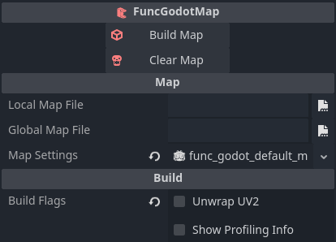

Building Maps
You've configured FuncGodot. You've configured your map editor. You've made your first test map of what will undoudbtedly be countless thousands. It's time to build.
When you get back into Godot, create a new scene. In that scene make your root node a base Node type. Call it whatever you'd like.
After that create a FuncGodotMap node as a child of this node.

Why do we make the FuncGodot Map a child and not the root? When a FuncGodot Map builds its scene it frees all of its children, including manually placed or edited nodes. Any work you did within the FuncGodot Map's branch of your Scene Tree will be erased when you rebuild the map (and you will rebuild it). Instead, do your post build customizations as siblings to the FuncGodot Map rather than children.
Let's take a look at our FuncGodot Map's properties.

Not much here. We have Local Map File and Global Map File. These point to the map file you want to build. The Global Map File will override the Local Map File. If you're working with a team and using source control it's probably best to stick with Local (res://) so you don't have to have matching drive and directory structures leading to the map files. The Global option is there partly as a potential Runtime build option.
The Map Settings property points to a FuncGodotMapSettings resource. FuncGodot uses this resource to define how your maps get built. Not all maps need to use the same Map Settings; it's possible to get clever and use different Map Settings resources on the same map file and get completely different results like referencing completely different textures or completely different entities utilizing common relative texture paths or class names.
Lastly we have some Build options. You can generally leave these alone, but they can be helpful if you find yourself having unexpected problems.
Let's take a quick peek at our Map Settings.

We went over most of these properties in the Textures Chapter, so we'll just go over the the ones we didn't cover: Inverse Scale Factor, Entity Fgd, UV Unwrap Texel Size, and Use Trenchbroom Groups Hierarchy.
The Entity Fgd property should be fairly obvious; like the map editor configurations, make sure this is the master FGD that contains all of your base FGDs and entity definitions. UV Unwrap Texel Size is for lightmapping; consult the Godot documentation for more information.
Inverse Scale Factor
One of the most impactful properties is the Inverse Scale Factor. It tells FuncGodot how big or small your map should be built. As it's an inverse scale, this means larger numbers will build smaller maps. How do you decide on the right inverse scale for your game though? To figure it out, it helps to know what you're scaling against.
In Godot, units are measured by meters. By default the modeling program Blender is as well. Quake maps however are all measured in Quake Units. Incidentally, a pixel in a map texture rendered at 100% scale on a brush face is equal to 1 Quake Unit.
How many pixels does a meter equal out to? 137? 22? The truth is that it's arbitrary; it really depends on what you want the average resolution of your game to be at. The FuncGodot Map Settings default to 32 because this puts a 1.5-2 meter tall player at a similar texture resolution to Quake. Feel free to experiment with this value to find the right scale for your game.


NOTE: Accounting for the Inverse Scale Factor in your class scripts will better allow you to design your entities within the map editor, i.e: using Quake Units to determine a moving platforms travel distance in your map editor and on import letting your node script translate that value into Godot Units using your Inverse Scale Factor.
Use Trenchbroom Groups Hierarchy
TrenchBroom has some unique features in the form of Layers and Groups (not to be confused with func_group, but also they're func_groups; they're weird). They add a convenient level of organization to the map making process.
In some cases mappers may want to design their maps in such a way as too create a hierarchy for their nodes using TrenchBroom Layers and Groups. FuncGodot offers this option using the Use Trenchbroom Groups Hierarchy property.
Let's say you created two layers and two groups of brush entities, both groups on separate layers.

If Use Trenchbroom Groups Hierarchy is disabled, your built FuncGodotMap scene structure will look something like this:

However, if you build your FuncGodotMap with Use Trenchbroom Groups Hierarchy enabled, you'll get this instead:

Building
You have your map file selected. You have your map settings ready. You've decided on an inverse scale factor and, if you're using TrenchBroom, you've decided whether you want a flat or multi-level scene tree hierarchy. It's time to build the map. With your FuncGodotMap node selected the toolbar at the top of the editor should change.

The Build button will build the map scene and apply all the appropriate ownership and settings to the map scene.
Unwrap UV2 can be used after the build process; it cycles through every Solid Entity with the Use In Baked Light property enabled in their definition and unwraps the UV2 of their MeshInstance3D children. If you're using baked lightmaps you'll need to press this button after every build but before every lightmap bake.
Go ahead and perform a Build and marvel in your master level craftsmanship.

Congratulations! You've built your first FuncGodot Map!